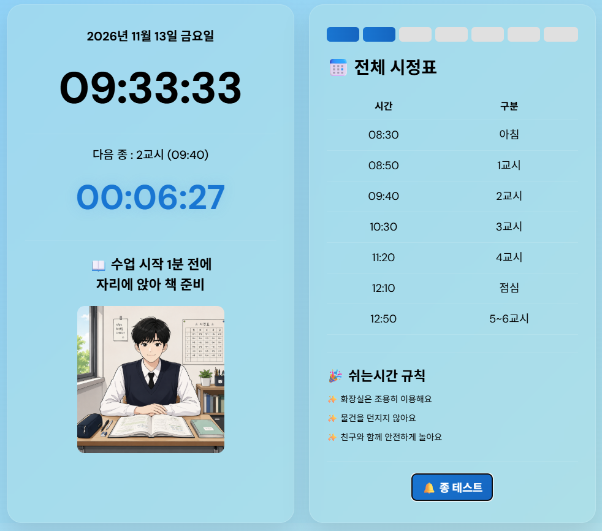

수업 준비 알림
쉬는시간이 끝나기 1분 전에 알려드려요.
00:00:00
다음 종을 확인하고 있어요
00:00:00
📖 수업 시작 1분 전에
자리에 앉아 책 준비

🗓️ 전체 시정표
| 시간 | 구분 |
|---|
🎉 쉬는시간 규칙
✨ 화장실은 조용히 이용해요
✨ 물건을 던지지 않아요
✨ 친구와 함께 안전하게 놀아요
종 테스트를 누르면 자동 알림도 켜져요.
🤫
작은 목소리, 즐거운 쉬는시간
높음 5초마다 쉬는시간 10초 차감
함께 배려하는 우리 교실
🎙️ 교실 소음측정기
측정 OFF— / 100
● 낮음● 보통● 높음
마이크를 켜고 우리 교실의 소음을 확인해요.
누적 쉬는시간 차감0초
남은 쉬는시간 10분 00초
소음 · 벌칙 설정
높음이 설정 시간 동안 이어질 때마다 차감합니다. 낮아지면 연속 시간이 초기화됩니다. 차감은 남은 쉬는시간까지만 적용됩니다.
실제 dB가 아닌 마이크 입력의 상대값입니다. 교실에 맞춰 기준을 조절하세요. 음성은 저장하거나 전송하지 않습니다.